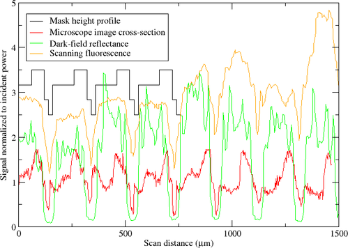
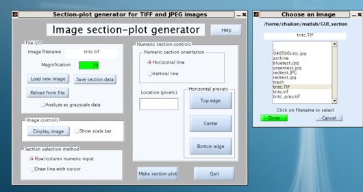
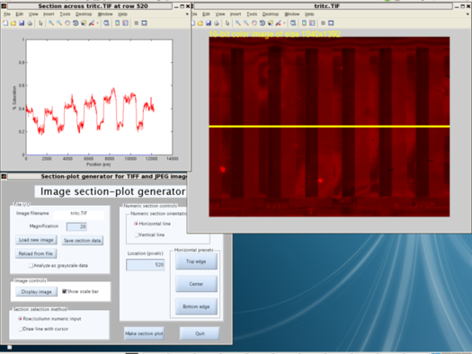
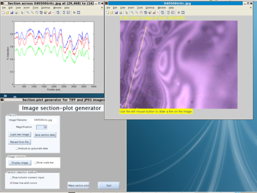
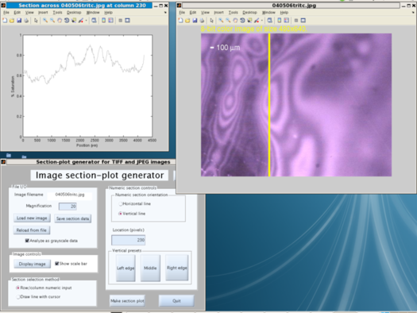
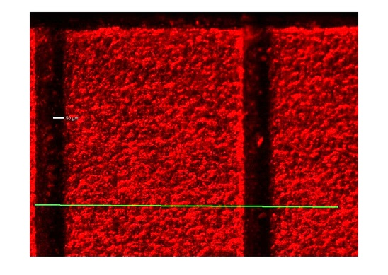
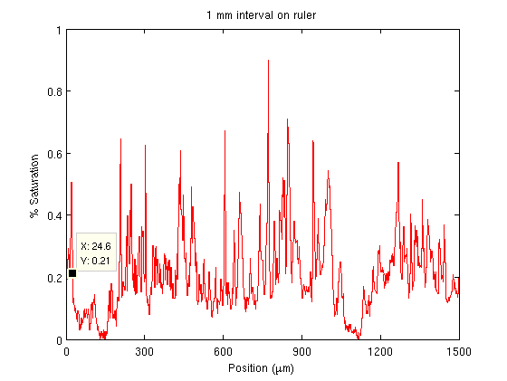

Author and Maintainer: Alison Chaiken
650-279-5600
Overview

Linescans
generated by Image Section Generator plotted together after
export.
The purpose of Image Section Generator is to facilitate the
comparison of image data from different kinds of scientific
instruments, primarily optical, electron and scanned-probe
microscopes. Input images must be in TIFF or JPEG format. Both color
and grayscale images are supported. Via an interactive GUI front-end,
users can designate lines of arbitrary length and orientation along
which intensity values (either RGB triplets or grayscale scalars) are
extracted and plotted. ISG can export tab-delimited data to a text
file for import into another plotting or analysis package. A
representative plot comparing 3 ISG-generated section lines (colors)
with an idealized mask profile (black) can be found in the figure
above.
Inspiration
The original inspiration for ISG comes from
the Section
Analysis mode
of Veeco's Atomic Force Microscope image analysis
software. ISG allows similarly designated sections from optical and
electron microscope images to be replotted with section data exported
from Veeco's software.
How to Use ISG

File
Selection dialog
- Load an image file for analysis by clicking the "Load new image"
button in the upper left "File I/O" panel and selecting a TIFF or JPEG
file from the list.
- Still in the File I/O panel, enter the magnification which is
applicable for the image, for example, "30" for 30x.
- Optionally examine the image by clicking the "Display image"
button on the "Image controls" panel. A message at the upper left of
the image shows its size in pixels.
- Choose one of two section designation methods:

Horizontal
section selected numerically
- horizontal or vertical sections ("Row/column numeric input")
Select "Row/column numeric input" on the "Section selection method"
panel if the section line along which data is extracted should have a
horizontal or vertical orientation and cross the entire image. Click
"horizontal line" or "vertical line" to select orientation. Either
use one of the preset buttons to indicate the line position or type a
numeric value in the "Location" window. Any typed numeric values must
fall within the range of the image size. For example, a vertical
section on a 480x640 (rows x columns) image must have a numeric
location between 1 and 640.

Arbitrarily
oriented section drawn with cursor
- for sections of arbitrary orientation and length ("Draw line with cursor")
Select "Draw line with cursor" on the "Section selection method"
panel. The horizontal-vertical controls are irrelevant and disappear.
- Click the "Make section plot" button
- for horizontal and vertical sections ("Row/column numeric input")
The section plot now appears in its own window.
- for sections of arbitrary length and orientation ("Draw line with
cursor")
The user is presented with the input image. Move the cross-hair
cursor to the first end-point of the section, depress the left mouse
button, then move to the second end-point and release it. The section
plot now appears in its own window.
- Optionally "Save section data" to tab-delimited columns using a
button on the File I/O menu, or extract a new section from the same
image, or load another file.
Other features:

Color
image forced to grayscale with scalebar display
Optionally color images can be analyzed as if they were grayscale by
using a checkbox on the File I/O panel. The "Analyze as grayscale
data" checkbox is visible only for color images.
A scale bar can be displayed on images by clicking a checkbox on the
"Image controls" panel. Unchecking this box does not redisplay the
current image but only affects new image windows.
Calibration of Image Section Generator

Optical microscope image of a precision scale with an ISG section-line

ISG-generated line section used for
calibration of scan lengths
ISG has been calibrated for the author's imaging systems by
capturing similar views of the same precision scale on all of them
and changing program constants to match. To calibrate your system,
take an image of an object of known dimension and adjust the
Installation
Image Section Generator was created using Mathworks'
wonderful Matlab
R2009a package. The current version isn't as bomb-proof or
featureful as I'd like yet. If you're looking at a local copy of
the documentation, be sure to check the latest version on
the website.
The source code is released under the terms of
the Gnu Public License version
3. Image Section Generator is free, both as in free beer and as
in freedom.
Running from source files using your existing Matlab
installation (Linux, Solaris, Mac or Windows)
(tested on Fedora 8 and Windows XP)
- Download the
source tarball
or Zip archive and unpack:
mkdir ISG
mv ImageSectionGeneratorSource.tar.gz ISG
cd ISG
tar xfz ImageSectionGeneratorSource.tar.gz
- Start Matlab and then start GUIDE by typing "guide" at the command
window >> prompt.
- In the GUIDE Quick Start window that opens, select the
"Open Existing GUI" tab. Click on ImageSectionGenerator.fig and
then push the "Open" button.
- An *editable* GUI opens. You don't want to edit the GUI, though;
just type Ctrl-T at this window to run it.
- Image Section Generator will start in its own window. Follow the
"How to Use ISG" instructions below.
Running the stand-alone binary independent of Matlab (Linux x86
only)
(tested only on Fedora 8)
- Download the
executable tarball
and unpack the archive:
mkdir ISG
mv ImageSectionGeneratorExecutable.tar.gz ISG
cd ISG
tar xfz ImageSectionGeneratorExecutable.tar.gz
The tarball is large (currently 207 MB) because it includes the Java
Virtual Machine (JVM) you will need to run the program. (Obviously I
didn't create the JVM; I got it from Mathworks, who got it from Sun.
Sun's license terms apply.)
- Run the MCRInstaller.bin program to install the JVM:
./MCRInstaller.bin
Answer all questions about where you want the JVM and let the
installation complete. A directory called MATLAB_Compiler_Runtime
will be created.
- Invoke the executable as
./run_ImageSectionGenerator.sh $HOME/MATLAB_Compiler_Runtime/v710
assuming that the directory MATLAB_Compiler_Runtime is in your home
directory. (If not, fix the path name.)
- A running Image Section Generator window should open. Operate the
application as specified in "How to Use ISG" above.
Running the stand-alone binary independent of Matlab (Windows
only)
(tested only on Windows XP)
- Download the
executable zip
archive and unpack into a new folder. The zip archive is large
(currently 299 MB) because it includes the Java Virtual Machine (JVM)
you will need to run the program. (Obviously I didn't create the JVM;
I got it from Mathworks, who got it from Sun. Sun's license terms
apply.)
- Run the program MCInstaller.exe from the DOS shell prompt. The
MCR is the MATLAB Compiler Runtime, which is essentially the JVM.
- Follow Mathworks' instructions in section 4A of the file
readme.txt to properly set the PATH environment variable so that
Windows finds the MCR.
- Now invoking ImageSectionGenerator_pkg.exe should start
Image Section Generator.
- A running Image Section Generator window should open. Operate the
application as specified in "How to Use ISG" above.
Features to be added
- Movable markers on the section, as in the Veeco AFM software.
- Optional display of image metadata and output to file.
- Easy, automated scale calibration method.
Known Bugs
In Windows, the placement of windows on the screen is poor. I have
not tested the Linux version on a variety of screen sizes, and there
may be problems there as well.
If you see other bugs or have other suggestions for improvement,
please email me.
{kind=link}
{kind=link}
{kind=link}
{kind=link}
{kind=link}
{kind=link}
{kind=link}